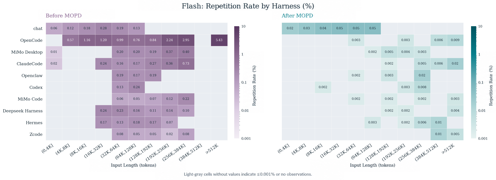
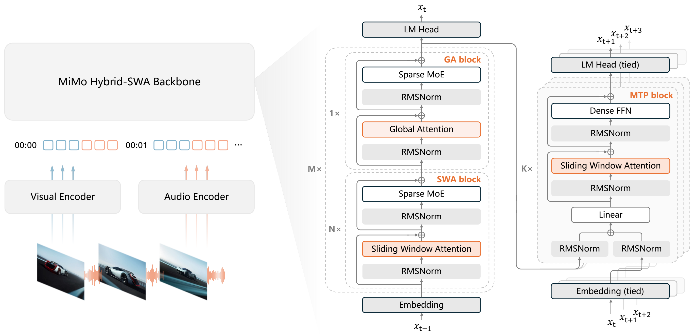

<source srcset="https://github.com/XiaomiMiMo/MiMo/raw/main/figures/Xiaomi_MiMo_darkmode.png?raw=true" media="(prefers-color-scheme: dark)"> 
| 🤗 HuggingFace | 📰 Blog | 🎨 Xiaomi MiMo API Platform | 🗨Xiaomi MiMo Studio | 💻 Xiaomi MiMo Desktop |
<strong>Community</strong>
WeChat Group | Discord | Telegram | Reddit
MiMo-V2.6-Flash-MOPD
<b>Technical Report</b>
1. Introduction
How MOPD2 works
MOPD2 distills several domain-specialized teachers into the student on-policy. The teachers fall into two families: mixRL teachers, trained on verifiable tasks, and SFT teachers, trained on synthetic demonstrations for open-domain tasks where a reliable reward is hard to design. Three streams contribute to a single update:
- Standard MOPD: mixRL teachers supervise full autonomous rollouts.
- Teacher-Prefix OPD: prefixes come from teacher rollouts. A trajectory with k assistant turns yields k history prefixes, one per turn. The model generates a single new turn from each, and the teacher scores it against the same history.
- SFT-Prefix OPD: prefixes come from SFT demonstrations. The demonstration supplies the history, and the model writes its own continuation.
Method details are in Technical Report §5.6.
Tool-call repetition
Following the release of MiMo-V2.6, tool-call repetition emerged as one of the most noticeable issues in agentic settings: the model would sometimes issue the same or highly similar tool calls repeatedly, consuming time and context without making progress. This checkpoint mitigates it.

Figure: response-level repetition rate on MiMo-V2.6-Flash, RL-stage versus this checkpoint, across context lengths and agent harnesses.
The technical blog has the full diagnosis. The fix is lightweight to train: a short specialized-teacher run that folds into the normal MOPD pass.
Model Summary
- Architecture: Sparse MoE (Mixture of Experts), 309B total / 15B activated parameters
- Context Length: 1M tokens
- Modalities: Text, Image, Video, Audio
- Vision Encoder: 681M-param MiMo ViT (28 layers: 24 SWA + 4 Full)
- Audio Encoder: 308M AudioTokenizer + 127M audio patch encoder
- Multi-Token Prediction (MTP): 5-layer speculative decoder

Figure 1. MiMo-V2.6 architecture.
2. Downloads
| Model | Download |
|---|---|
| MiMo-V2.6-Pro-RL | 🤗 HuggingFace · 🤖 ModelScope |
| MiMo-V2.6-Flash-RL | 🤗 HuggingFace · 🤖 ModelScope |
| MiMo-V2.6-Pro-MOPD | 🤗 HuggingFace · 🤖 ModelScope |
| MiMo-V2.6-Flash-MOPD | 🤗 HuggingFace · 🤖 ModelScope |
3. Model Architecture
LLM Backbone
| Component | MiMo-V2.6-Flash-MOPD |
|---|---|
| Layers (Total / SWA / GA) | 48 / 39 / 9 |
| Hidden Size | 4096 |
| SWA Heads (Q/KV) | 64 / 8 |
| GA Heads (Q/KV) | 64 / 4 |
| Head Dimensions (QK / V) | 192 / 128 |
| Sliding Window Size | 128 |
| Routed Experts (Total / Activated) | 256 / 8 |
| Max Context Length | 1M |
| MTP / Speculative Decoder | 5 SWA layers, window 1024 |
The first Transformer block uses global attention with a dense FFN. Remaining blocks interleave local SWA and GA; both use sparse MoE FFNs without shared experts.
Vision Encoder (MiMo ViT)
| Configuration | Value |
|---|---|
| Layers (Total / SWA / GA) | 28 / 24 / 4 |
| Hidden Size | 1280 |
| Attention Heads (Q / KV) | 32 / 8 |
| Head Dimension | 64 |
| Patch Size (T × H × W) | 2 × 16 × 16 |
| Sliding Window (Left / Right) | 64 / 64 |
| Spatial Merge Size | 2 × 2 |
| Parameters | 681M |
Audio Encoders
AudioTokenizer encoder: 24 layers (12 SWA / 12 GA), hidden 1024, 20 RVQ codebooks, 308M parameters. Audio patch encoder: 6 layers, 127M parameters; four frames per patch (25 Hz → 6.25 Hz).
Speculative Decoder
5-layer SWA MTP drafter (DFlash-style). Predicts 7 subsequent tokens per forward pass for parallel verification.
4. Deployment
For best performance, follow the SGLang MiMo cookbook. Docker image: lmsysorg/sglang:latest.
SGLang
bashsglang serve \ --trust-remote-code \ --model-path XiaomiMiMo/MiMo-V2.6-Flash-MOPD \ --tp 8 \ --dp 2 \ --enable-dp-attention \ --enable-dp-lm-head \ --mm-enable-dp-encoder \ --mem-fraction-static 0.65 \ --chunked-prefill-size 16384 \ --speculative-algorithm EAGLE \ --speculative-num-steps 3 \ --speculative-eagle-topk 1 \ --speculative-num-draft-tokens 4 \ --enable-multi-layer-eagle \ --reasoning-parser mimo \ --tool-call-parser mimo \ --host 0.0.0.0 \ --port 30000
vLLM
Follow the vLLM MiMo-V2.5 recipe. Stable vLLM may lag; pre-built image: docker pull vllm/vllm-openai:mimov25-cu129.
bashvllm serve XiaomiMiMo/MiMo-V2.6-Flash-MOPD \ --tensor-parallel-size 4 \ --trust-remote-code \ --gpu-memory-utilization 0.95 \ --max-model-len auto \ --reasoning-parser mimo \ --tool-call-parser mimo \ --enable-auto-tool-choice \ --generation-config vllm
Recommended sampling: temperature=1.0, top_p=0.95.
Also available in AI Studio, MiMo Code, Xiaomi MiMo Desktop, Xiaomi MiMo Open Platform API, and OpenRouter.
Citation
bibtex@misc{mimo2026v26flashmopd, title={MiMo-V2.6-Flash-MOPD}, author={{Xiaomi MiMo Team}}, year={2026}, howpublished={\url{https://huggingface.co/XiaomiMiMo/MiMo-V2.6-Flash-MOPD}}, }
Contact
For questions or feedback, reach us at mimo@xiaomi.com or join our community: